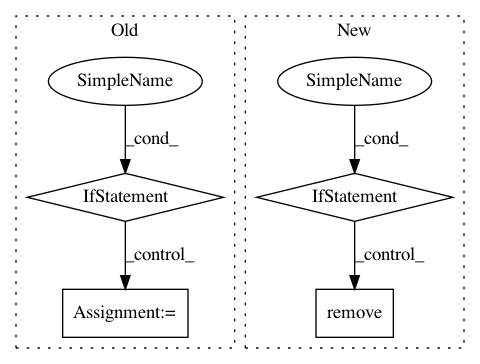

03d22bbb0177117498b3021e068611c6b9421e15,nilmtk/dataset_converters/wikienergy/download_wikienergy.py,,download_wikienergy,#,38
Before Change
chunk_start = chunk_start + chunk_size
// saves all chunks
if len(dataframe_list) > 0:
dataframe_concat = pd.concat(dataframe_list)
//dataframe_concat.to_csv(output_directory + str(building_id) + ".csv")
store.close()
conn.close()
def _wikienergy_dataframe_to_hdf(wikienergy_dataframe, store):
After Change
// remove existing building yaml files in module dir
for f in os.listdir(join(_get_module_directory(), "metadata")):
if re.search("^building", f):
os.remove(join(_get_module_directory(), "metadata", f))
// get tables in database schema
sql_query = ("SELECT TABLE_NAME" +
" FROM INFORMATION_SCHEMA.TABLES" +
" WHERE TABLE_TYPE = "BASE TABLE"" +
" AND TABLE_SCHEMA="" + database_schema + """ +
In pattern: SUPERPATTERN
Frequency: 3
Non-data size: 4
Instances
Project Name: nilmtk/nilmtk
Commit Name: 03d22bbb0177117498b3021e068611c6b9421e15
Time: 2014-07-21
Author: oliparson@gmail.com
File Name: nilmtk/dataset_converters/wikienergy/download_wikienergy.py
Class Name:
Method Name: download_wikienergy
Project Name: jazzband/django-debug-toolbar
Commit Name: cc08c0d19bd5d1c7ff2281e3c3e4d92fa932e6d5
Time: 2014-02-15
Author: schillingt@better-simple.com
File Name: debug_toolbar/settings.py
Class Name:
Method Name:
Project Name: eth-cscs/reframe
Commit Name: 597942c57049c748467e402a59a4240041bf4181
Time: 2021-02-15
Author: karakasis@cscs.ch
File Name: cscs-checks/libraries/io/netcdf_compile_run.py
Class Name: NetCDFTest
Method Name: __init__